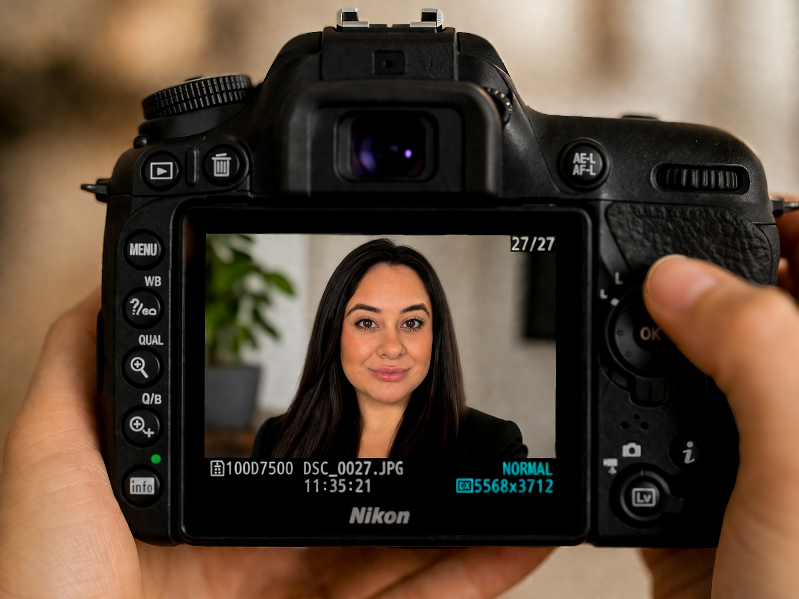

Hi, I’m Donna Baca, the face behind the lens. Striving to give you Soft, Natural, Light & Airy Lifestyle Photography.
I’ve been a dental hygienist for over 7 years, but photography is where my heart truly comes alive. What started as a hobby quickly became a passion.
I love using my lens to naturally empower people, helping them feel confident, beautiful, and truly seen. There’s something special about capturing a moment and turning it into a memory you can hold onto forever.
Outside of photography, I’m a cat lover, a wife, and someone who finds my strength and purpose in faith - Romans 8:31: “If God is for us, who can be against us?”